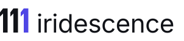
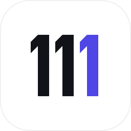
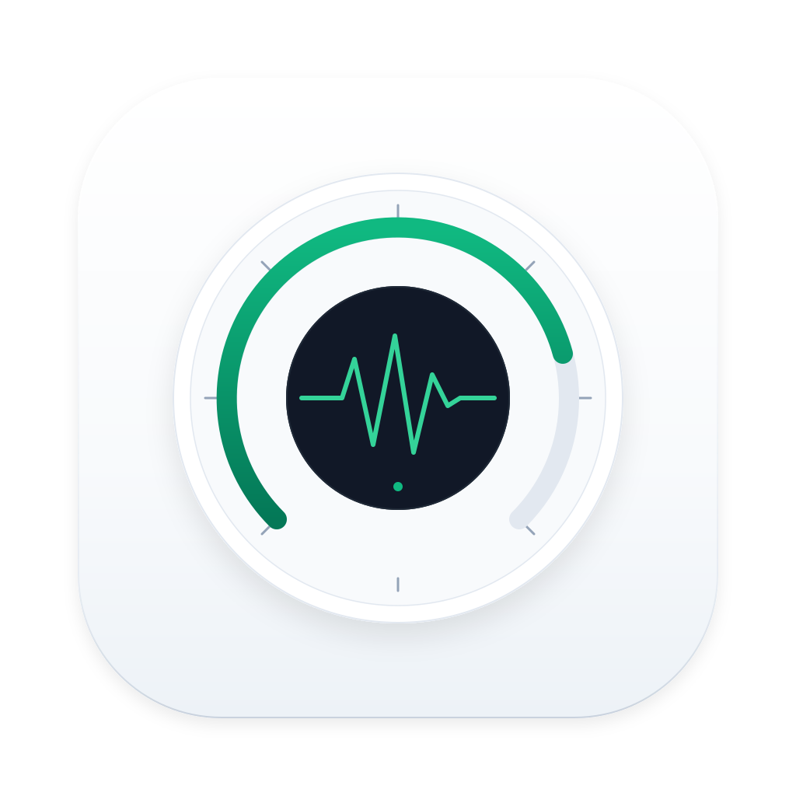
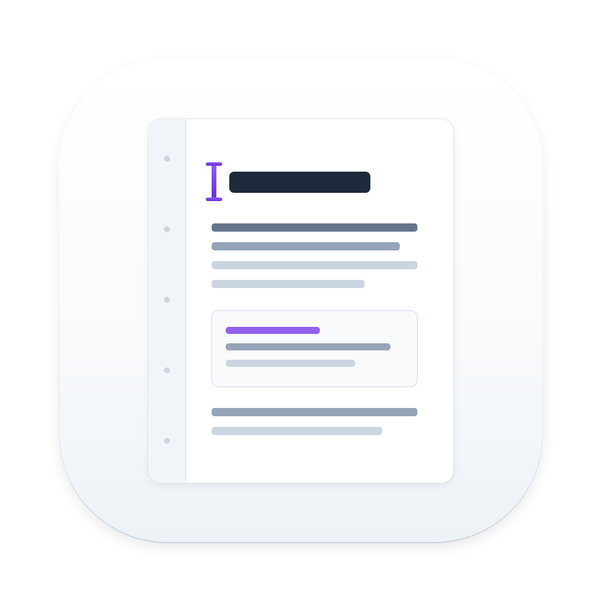
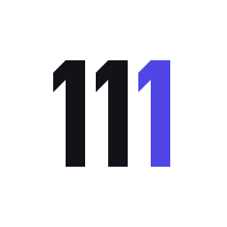
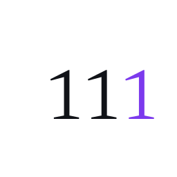

A typography-led identity celebrating the tripartite "111" cadence through architectural precision and Swiss modernist clarity. Solid black vector geometry, balanced negative space, and a single restrained Iris accent. Zero neon glow, zero artificial ribbons.

111 with Iris accent (#4F46E5) locked with lowercase iridescence.

#F8FAFC) with soft Iris accent (#818CF8) for IDEs, terminal, and dark website canvas.

tactile, physical metaphors drawn with restrained accents, daylight illumination, and standard Apple squircle geometry. Replaces dark obsidian void tiles with authentic native macOS presence.


Three genuinely distinct proposals developed and scored across eight professional criteria.


| Design Criterion (1–10) | Direction A (Cadence Triple) | Direction B (Stepped Monolith) | Direction C (Atelier Specimen) |
|---|---|---|---|
| 1. Originality & Character | 10/10 — Custom architectural letterforms | 8/10 — Clean geometry | 7/10 — Classical serif |
| 2. Immediate Recognisability | 10/10 — Unmistakable 111 rhythm | 8/10 — Abstracted slabs | 7/10 — Slower reading at distance |
| 3. Legibility at 16 px | 10/10 — Zero blur, 2px solid stems | 8/10 — Angled tops soften | 6/10 — Fine bracketed serifs vanish |
| 4. Timelessness & Restraint | 10/10 — Modernist Swiss heritage | 8/10 — Tech-leaning | 9/10 — Classical bookmaking |
| 5. macOS Native Appropriateness | 10/10 — Matches Cultured Code / Panic / Linear | 8/10 — SaaS utility aesthetic | 6/10 — Literary / publisher aesthetic |
| 6. Optical Balance & Weight | 10/10 — Perfect baseline & x-height lock | 8/10 — Left-heavy symbol offset | 8/10 — Generous tracking |
| 7. Simplicity & Vector Craft | 10/10 — 24 anchors, 0 filters, 0 gradients | 8/10 — Multiple polygon facets | 8/10 — High curve complexity |
| 8. Monochrome Reproduction | 10/10 — Flawless 1-color black & white | 9/10 — Relies on contrast tiers | 9/10 — Thin serifs vulnerable in print |
| Total Score | 78 / 80 (Approved Master) | 65 / 80 | 61 / 80 |
Direct comparison between the retired artificial technology identity and the new timeless independent studio identity.
| Dimension | Retired Identity (v1.0) | New Identity (v2.0) |
|---|---|---|
| Aesthetic Tone | AI-Generated Tech Neon glow, dark voids, saturated gradients, cybernetic widgets | Independent macOS Studio Quiet confidence, tactile daylight materials, Swiss modernist restraint |
| Master Logo | 3 glowing neon pill bars with diagonal facets inside an obsidian squircle + live text | Integrated vector wordmark: custom architectural 111 + clean grotesque iridescence (pure SVG paths) |
| Technical Quality | Score: 47/100 Live <text> tags, 15 colors, 5 gradients, heavy CSS filters | Score: 99/100 Outlined vector paths, 0 live text, 1–2 colors, 0 blur filters, 100% scalable |
| Monochrome Usability | Broken (relies on colored glow and gradient depth to distinguish shapes) | 100% native (drawn and tested in solid 1-color black and white first) |
| Small-Size (16px) | Degrades into muddy blurred color smudges | Crisp 2px solid stems with 1.5px gaps; razor-sharp in Finder & browser tabs |
| App Icons | Dark black holes with neon blue/amber/green lasers | Physical macOS cards with natural top daylight, realistic ground shadows, and purposeful metaphors |